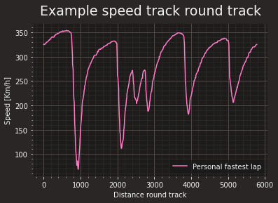
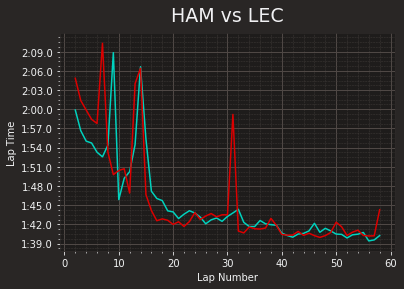
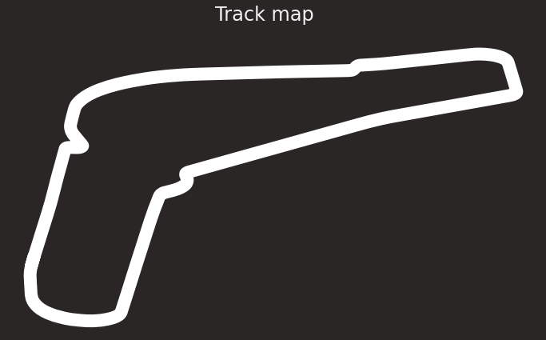
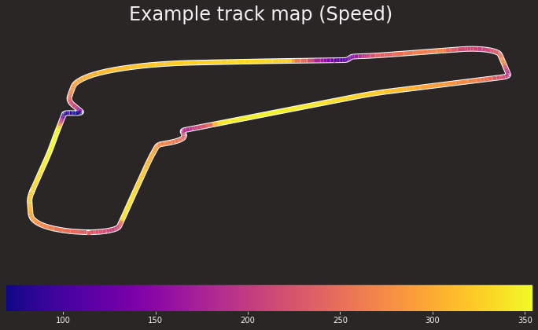
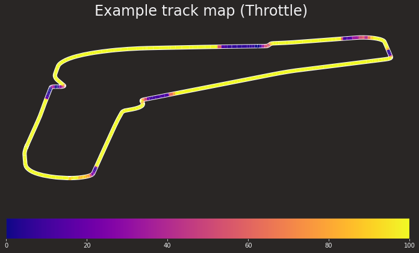

#Install with:
# %pip install --upgrade fastf1
# Dev version:
# %pip install --upgrade https://github.com/theOehrly/Fast-F1/archive/refs/heads/master.zip
import fastf1 as ff12 Getting Started With FastF1
The theOehrly/Fast-F1 Python package [docs] provides a relatively straightforward way of downloading and accessing telemetry data from the Formula One website and the ergast historical motor racing results database.
In this chapter, we’ll have a quick overview of the package to get a feel for the sorts of things we can do with it, before diving in to more detail in other chapters.
Let’s start off by importing the package:
The package API may change rapidly, and may include breaking changes.
The code used in this chapter relates to version 2.2.9.
# Check the package version
ff1.__version__'2.2.9'To minimise the number of calls made to the website, the package can be configured to cache data whenever possible.
from pathlib import Path
cachedir = ".cache"
Path(cachedir).mkdir(parents=True, exist_ok=True)
ff1.Cache.enable_cache(cachedir) If we request the same data again, the locally cached data will be used, rather than a call being made to the Formula One data service.
This has the advantage that if you have already cached the data, you can load it even if you are offline.Data can be retrieved for specific sessions of specific races.
As the data is loaded, a diagnostic trace is displayed showing what data has been retrieved, and from where (for example, downloaded from the original API or retrieved from the cache).
# Select a wualifying session ("Q") or a race session("R")
monza_quali = ff1.get_session(2019, 'Monza', 'Q')
monza_quali.load()core INFO Loading data for Italian Grand Prix - Qualifying [v2.2.9]
api INFO Using cached data for driver_info
api INFO Using cached data for timing_data
api INFO Using cached data for timing_app_data
core INFO Processing timing data...
api INFO Using cached data for session_status_data
api INFO Using cached data for track_status_data
api INFO Using cached data for car_data
api INFO Using cached data for position_data
api INFO Using cached data for weather_data
api INFO Using cached data for race_control_messages
core INFO Finished loading data for 20 drivers: ['16', '44', '77', '5', '3', '27', '55', '23', '18', '7', '99', '20', '26', '4', '10', '8', '11', '63', '88', '33']A good selection of metadata is available to describe the associated event:
weekend = monza_quali.event
weekendRoundNumber 14
Country Italy
Location Monza
OfficialEventName FORMULA 1 GRAN PREMIO HEINEKEN D’ITALIA 2019
EventDate 2019-09-08 00:00:00
EventName Italian Grand Prix
EventFormat conventional
Session1 Practice 1
Session1Date 2019-09-06 00:00:00
Session2 Practice 2
Session2Date 2019-09-06 00:00:00
Session3 Practice 3
Session3Date 2019-09-07 00:00:00
Session4 Qualifying
Session4Date 2019-09-07 00:00:00
Session5 Race
Session5Date 2019-09-08 00:00:00
F1ApiSupport True
Name: Italian Grand Prix, dtype: object2.1 Driver Details
A wide range of data is available, and can be can be explored in several ways.
For example, we can get the data for a particular driver, and identify their fastest lap, along with various summary statistics for it:
Here’s an example of the driver details:
monza_quali.get_driver('LEC')DriverNumber 16
BroadcastName C LECLERC
Abbreviation LEC
TeamName Ferrari
TeamColor dc0000
FirstName Charles
LastName Leclerc
FullName Charles Leclerc
Position 1.0
GridPosition 0.0
Q1 0 days 00:01:20.126000
Q2 0 days 00:01:19.553000
Q3 0 days 00:01:19.307000
Time NaT
Status
Points 0.0
Name: Charles, dtype: objectWe can retrieve summary data about each lap:
monza_quali.laps.head()| Time | DriverNumber | LapTime | LapNumber | Stint | PitOutTime | PitInTime | Sector1Time | Sector2Time | Sector3Time | ... | IsPersonalBest | Compound | TyreLife | FreshTyre | LapStartTime | Team | Driver | TrackStatus | IsAccurate | LapStartDate | |
|---|---|---|---|---|---|---|---|---|---|---|---|---|---|---|---|---|---|---|---|---|---|
| 0 | 0 days 00:21:01.358000 | 16 | NaT | 1 | 1 | 0 days 00:19:26.847000 | NaT | NaT | 0 days 00:00:30.837000 | 0 days 00:00:33.016000 | ... | False | MEDIUM | 1.0 | True | 0 days 00:19:26.847000 | Ferrari | LEC | 1 | False | 2019-09-07 13:04:27.940 |
| 1 | 0 days 00:22:21.775000 | 16 | 0 days 00:01:20.417000 | 2 | 1 | NaT | NaT | 0 days 00:00:26.982000 | 0 days 00:00:26.734000 | 0 days 00:00:26.701000 | ... | False | MEDIUM | 2.0 | True | 0 days 00:21:01.358000 | Ferrari | LEC | 1 | True | 2019-09-07 13:06:02.451 |
| 2 | 0 days 00:24:03.991000 | 16 | 0 days 00:01:42.216000 | 3 | 1 | NaT | NaT | 0 days 00:00:33.988000 | 0 days 00:00:35.632000 | 0 days 00:00:32.596000 | ... | False | MEDIUM | 3.0 | True | 0 days 00:22:21.775000 | Ferrari | LEC | 1 | True | 2019-09-07 13:07:22.868 |
| 3 | 0 days 00:25:24.117000 | 16 | 0 days 00:01:20.126000 | 4 | 1 | NaT | NaT | 0 days 00:00:26.749000 | 0 days 00:00:26.777000 | 0 days 00:00:26.600000 | ... | False | MEDIUM | 4.0 | True | 0 days 00:24:03.991000 | Ferrari | LEC | 1 | True | 2019-09-07 13:09:05.084 |
| 4 | 0 days 00:27:09.461000 | 16 | 0 days 00:01:45.344000 | 5 | 1 | NaT | NaT | 0 days 00:00:33.884000 | 0 days 00:00:37.703000 | 0 days 00:00:33.757000 | ... | False | MEDIUM | 5.0 | True | 0 days 00:25:24.117000 | Ferrari | LEC | 1 | True | 2019-09-07 13:10:25.210 |
5 rows × 27 columns
2.2 Laps Data
A wide range of data is provided as part of the Laps table:
monza_quali.laps.columnsIndex(['Time', 'DriverNumber', 'LapTime', 'LapNumber', 'Stint', 'PitOutTime',
'PitInTime', 'Sector1Time', 'Sector2Time', 'Sector3Time',
'Sector1SessionTime', 'Sector2SessionTime', 'Sector3SessionTime',
'SpeedI1', 'SpeedI2', 'SpeedFL', 'SpeedST', 'IsPersonalBest',
'Compound', 'TyreLife', 'FreshTyre', 'LapStartTime', 'Team', 'Driver',
'TrackStatus', 'IsAccurate', 'LapStartDate'],
dtype='object')We can check the laps for a particular car:
lec_laps = monza_quali.laps.pick_driver(16)
lec_laps[:5]| Time | DriverNumber | LapTime | LapNumber | Stint | PitOutTime | PitInTime | Sector1Time | Sector2Time | Sector3Time | ... | IsPersonalBest | Compound | TyreLife | FreshTyre | LapStartTime | Team | Driver | TrackStatus | IsAccurate | LapStartDate | |
|---|---|---|---|---|---|---|---|---|---|---|---|---|---|---|---|---|---|---|---|---|---|
| 0 | 0 days 00:21:01.358000 | 16 | NaT | 1 | 1 | 0 days 00:19:26.847000 | NaT | NaT | 0 days 00:00:30.837000 | 0 days 00:00:33.016000 | ... | False | MEDIUM | 1.0 | True | 0 days 00:19:26.847000 | Ferrari | LEC | 1 | False | 2019-09-07 13:04:27.940 |
| 1 | 0 days 00:22:21.775000 | 16 | 0 days 00:01:20.417000 | 2 | 1 | NaT | NaT | 0 days 00:00:26.982000 | 0 days 00:00:26.734000 | 0 days 00:00:26.701000 | ... | False | MEDIUM | 2.0 | True | 0 days 00:21:01.358000 | Ferrari | LEC | 1 | True | 2019-09-07 13:06:02.451 |
| 2 | 0 days 00:24:03.991000 | 16 | 0 days 00:01:42.216000 | 3 | 1 | NaT | NaT | 0 days 00:00:33.988000 | 0 days 00:00:35.632000 | 0 days 00:00:32.596000 | ... | False | MEDIUM | 3.0 | True | 0 days 00:22:21.775000 | Ferrari | LEC | 1 | True | 2019-09-07 13:07:22.868 |
| 3 | 0 days 00:25:24.117000 | 16 | 0 days 00:01:20.126000 | 4 | 1 | NaT | NaT | 0 days 00:00:26.749000 | 0 days 00:00:26.777000 | 0 days 00:00:26.600000 | ... | False | MEDIUM | 4.0 | True | 0 days 00:24:03.991000 | Ferrari | LEC | 1 | True | 2019-09-07 13:09:05.084 |
| 4 | 0 days 00:27:09.461000 | 16 | 0 days 00:01:45.344000 | 5 | 1 | NaT | NaT | 0 days 00:00:33.884000 | 0 days 00:00:37.703000 | 0 days 00:00:33.757000 | ... | False | MEDIUM | 5.0 | True | 0 days 00:25:24.117000 | Ferrari | LEC | 1 | True | 2019-09-07 13:10:25.210 |
5 rows × 27 columns
2.3 Car Telemetry Data
Perhaps more interestingly, we can look up regular samples of raw car data for a particular driver:
monza_quali.car_data['16'][:5]| Date | RPM | Speed | nGear | Throttle | Brake | DRS | Source | Time | SessionTime | |
|---|---|---|---|---|---|---|---|---|---|---|
| 0 | 2019-09-07 12:45:02.230 | 0 | 0 | 0 | 0 | False | 0 | car | 0 days 00:00:01.137000 | 0 days 00:00:01.137000 |
| 1 | 2019-09-07 12:45:02.470 | 0 | 0 | 0 | 0 | False | 0 | car | 0 days 00:00:01.377000 | 0 days 00:00:01.377000 |
| 2 | 2019-09-07 12:45:02.710 | 0 | 0 | 0 | 0 | False | 0 | car | 0 days 00:00:01.617000 | 0 days 00:00:01.617000 |
| 3 | 2019-09-07 12:45:02.990 | 0 | 0 | 0 | 0 | False | 0 | car | 0 days 00:00:01.897000 | 0 days 00:00:01.897000 |
| 4 | 2019-09-07 12:45:03.230 | 0 | 0 | 0 | 0 | False | 0 | car | 0 days 00:00:02.137000 | 0 days 00:00:02.137000 |
An even more helpful telemetry data report includes a derived accumulated distance travelled round the track on each lap, as well as on-track contextual information, such as the distance to, and identity of, the driver ahead on-track.
We can retrieve the telemetry data associated with a particular lap by calling the get_telemetry() method on a single lap object:
# We need to index to a particular lap record
lec_laps.iloc[1].get_telemetry()| Date | SessionTime | DriverAhead | DistanceToDriverAhead | Time | RPM | Speed | nGear | Throttle | Brake | DRS | Source | Distance | RelativeDistance | Status | X | Y | Z | |
|---|---|---|---|---|---|---|---|---|---|---|---|---|---|---|---|---|---|---|
| 2 | 2019-09-07 13:06:02.451 | 0 days 00:21:01.358000 | 400.271389 | 0 days 00:00:00 | 11464 | 319 | 8 | 100 | False | 8 | interpolation | 0.031139 | 0.000005 | OnTrack | -1413 | -840 | 1871 | |
| 3 | 2019-09-07 13:06:02.521 | 0 days 00:21:01.428000 | 400.271389 | 0 days 00:00:00.070000 | 11479 | 319 | 8 | 100 | False | 8 | pos | 6.278267 | 0.001083 | OnTrack | -1396 | -769 | 1872 | |
| 4 | 2019-09-07 13:06:02.524 | 0 days 00:21:01.431000 | 400.271389 | 0 days 00:00:00.073000 | 11509 | 320 | 8 | 100 | False | 8 | car | 6.546389 | 0.001129 | OnTrack | -1395 | -766 | 1872 | |
| 5 | 2019-09-07 13:06:02.764 | 0 days 00:21:01.671000 | 88 | 400.271389 | 0 days 00:00:00.313000 | 11584 | 323 | 8 | 100 | False | 8 | car | 28.079722 | 0.004843 | OnTrack | -1375 | -566 | 1872 |
| 6 | 2019-09-07 13:06:02.821 | 0 days 00:21:01.728000 | 88 | 400.671389 | 0 days 00:00:00.370000 | 11578 | 323 | 8 | 100 | False | 8 | pos | 33.206760 | 0.005728 | OnTrack | -1371 | -520 | 1873 |
| ... | ... | ... | ... | ... | ... | ... | ... | ... | ... | ... | ... | ... | ... | ... | ... | ... | ... | ... |
| 597 | 2019-09-07 13:07:22.522 | 0 days 00:22:21.429000 | 88 | 151.229167 | 0 days 00:01:20.071000 | 11512 | 319 | 8 | 100 | False | 8 | pos | 5754.345540 | 0.992564 | OnTrack | -1438 | -1212 | 1870 |
| 598 | 2019-09-07 13:07:22.525 | 0 days 00:22:21.432000 | 88 | 150.462500 | 0 days 00:01:20.074000 | 11539 | 320 | 8 | 100 | False | 8 | car | 5754.613056 | 0.992610 | OnTrack | -1437 | -1208 | 1870 |
| 599 | 2019-09-07 13:07:22.765 | 0 days 00:22:21.672000 | 88 | 148.795833 | 0 days 00:01:20.314000 | 11575 | 322 | 8 | 100 | False | 8 | car | 5776.079722 | 0.996313 | OnTrack | -1413 | -945 | 1870 |
| 600 | 2019-09-07 13:07:22.822 | 0 days 00:22:21.729000 | 88 | 148.795833 | 0 days 00:01:20.371000 | 11607 | 322 | 8 | 100 | False | 8 | pos | 5781.180410 | 0.997192 | OnTrack | -1408 | -889 | 1871 |
| 601 | 2019-09-07 13:07:22.868 | 0 days 00:22:21.775000 | 88 | 148.795833 | 0 days 00:01:20.417000 | 11623 | 322 | 8 | 100 | False | 8 | interpolation | 5785.295662 | 0.997902 | OnTrack | -1403 | -845 | 1871 |
600 rows × 18 columns
We can more explicitly return the record for a specific lap by filtering on the LapNumner:
def onLap(laps, lap):
"""Get record for a particular lap."""
return laps[laps["LapNumber"]==lap].iloc[0]onLap(lec_laps, 2) Time 0 days 00:22:21.775000
DriverNumber 16
LapTime 0 days 00:01:20.417000
LapNumber 2
Stint 1
PitOutTime NaT
PitInTime NaT
Sector1Time 0 days 00:00:26.982000
Sector2Time 0 days 00:00:26.734000
Sector3Time 0 days 00:00:26.701000
Sector1SessionTime 0 days 00:21:28.340000
Sector2SessionTime 0 days 00:21:55.074000
Sector3SessionTime 0 days 00:22:21.775000
SpeedI1 323.0
SpeedI2 342.0
SpeedFL 318.0
SpeedST 342.0
IsPersonalBest False
Compound MEDIUM
TyreLife 2.0
FreshTyre True
LapStartTime 0 days 00:21:01.358000
Team Ferrari
Driver LEC
TrackStatus 1
IsAccurate True
LapStartDate 2019-09-07 13:06:02.451000
Name: 1, dtype: objectWe can get then telemetry for the lap by calling the .get_telemetry() method on the returned lap object:
onLap(lec_laps, 2).get_telemetry()| Date | SessionTime | DriverAhead | DistanceToDriverAhead | Time | RPM | Speed | nGear | Throttle | Brake | DRS | Source | Distance | RelativeDistance | Status | X | Y | Z | |
|---|---|---|---|---|---|---|---|---|---|---|---|---|---|---|---|---|---|---|
| 2 | 2019-09-07 13:06:02.451 | 0 days 00:21:01.358000 | 400.271389 | 0 days 00:00:00 | 11464 | 319 | 8 | 100 | False | 8 | interpolation | 0.031139 | 0.000005 | OnTrack | -1413 | -840 | 1871 | |
| 3 | 2019-09-07 13:06:02.521 | 0 days 00:21:01.428000 | 400.271389 | 0 days 00:00:00.070000 | 11479 | 319 | 8 | 100 | False | 8 | pos | 6.278267 | 0.001083 | OnTrack | -1396 | -769 | 1872 | |
| 4 | 2019-09-07 13:06:02.524 | 0 days 00:21:01.431000 | 400.271389 | 0 days 00:00:00.073000 | 11509 | 320 | 8 | 100 | False | 8 | car | 6.546389 | 0.001129 | OnTrack | -1395 | -766 | 1872 | |
| 5 | 2019-09-07 13:06:02.764 | 0 days 00:21:01.671000 | 88 | 400.271389 | 0 days 00:00:00.313000 | 11584 | 323 | 8 | 100 | False | 8 | car | 28.079722 | 0.004843 | OnTrack | -1375 | -566 | 1872 |
| 6 | 2019-09-07 13:06:02.821 | 0 days 00:21:01.728000 | 88 | 400.671389 | 0 days 00:00:00.370000 | 11578 | 323 | 8 | 100 | False | 8 | pos | 33.206760 | 0.005728 | OnTrack | -1371 | -520 | 1873 |
| ... | ... | ... | ... | ... | ... | ... | ... | ... | ... | ... | ... | ... | ... | ... | ... | ... | ... | ... |
| 597 | 2019-09-07 13:07:22.522 | 0 days 00:22:21.429000 | 88 | 151.229167 | 0 days 00:01:20.071000 | 11512 | 319 | 8 | 100 | False | 8 | pos | 5754.345540 | 0.992564 | OnTrack | -1438 | -1212 | 1870 |
| 598 | 2019-09-07 13:07:22.525 | 0 days 00:22:21.432000 | 88 | 150.462500 | 0 days 00:01:20.074000 | 11539 | 320 | 8 | 100 | False | 8 | car | 5754.613056 | 0.992610 | OnTrack | -1437 | -1208 | 1870 |
| 599 | 2019-09-07 13:07:22.765 | 0 days 00:22:21.672000 | 88 | 148.795833 | 0 days 00:01:20.314000 | 11575 | 322 | 8 | 100 | False | 8 | car | 5776.079722 | 0.996313 | OnTrack | -1413 | -945 | 1870 |
| 600 | 2019-09-07 13:07:22.822 | 0 days 00:22:21.729000 | 88 | 148.795833 | 0 days 00:01:20.371000 | 11607 | 322 | 8 | 100 | False | 8 | pos | 5781.180410 | 0.997192 | OnTrack | -1408 | -889 | 1871 |
| 601 | 2019-09-07 13:07:22.868 | 0 days 00:22:21.775000 | 88 | 148.795833 | 0 days 00:01:20.417000 | 11623 | 322 | 8 | 100 | False | 8 | interpolation | 5785.295662 | 0.997902 | OnTrack | -1403 | -845 | 1871 |
600 rows × 18 columns
Find the fastest lap from a set of laps:
lec_fast_lap = lec_laps.pick_fastest()
lec_fast_lapTime 0 days 01:11:14.868000
DriverNumber 16
LapTime 0 days 00:01:19.307000
LapNumber 14
Stint 5
PitOutTime NaT
PitInTime NaT
Sector1Time 0 days 00:00:26.469000
Sector2Time 0 days 00:00:26.412000
Sector3Time 0 days 00:00:26.426000
Sector1SessionTime 0 days 01:10:22.030000
Sector2SessionTime 0 days 01:10:48.442000
Sector3SessionTime 0 days 01:11:14.868000
SpeedI1 329.0
SpeedI2 347.0
SpeedFL 321.0
SpeedST 349.0
IsPersonalBest True
Compound SOFT
TyreLife 3.0
FreshTyre True
LapStartTime 0 days 01:09:55.561000
Team Ferrari
Driver LEC
TrackStatus 2
IsAccurate True
LapStartDate 2019-09-07 13:54:56.654000
Name: 13, dtype: objectWe can also iterate over the laps, for example as monza_quali.laps.pick_driver(16).iterlaps(); each iteration returns a 2-tuple of the car number and the data for a particular lap.
We can get the telemetry for that driver on each lap by calling the .get_telemetry() method on the second (lap) element in the 2-tuple.
2.4 Simple Plots
The fastf1 package also provides a range of tools to support the plotting of data:
from matplotlib import pyplot as plt
from fastf1 import plotting
# Configures timebase for axis ticks
plotting.setup_mpl()For example, a range of labels and colour schemes are defined for enriching displays:
ff1.plotting.TEAM_TRANSLATE{'MER': 'mercedes',
'FER': 'ferrari',
'RBR': 'red bull',
'MCL': 'mclaren',
'APN': 'alpine',
'AMR': 'aston martin',
'ARR': 'alfa romeo',
'APT': 'alphatauri',
'HAA': 'haas',
'WIL': 'williams'}ff1.plotting.TEAM_COLORS{'mercedes': '#00d2be',
'ferrari': '#dc0000',
'red bull': '#0600ef',
'mclaren': '#ff8700',
'alpine': '#0090ff',
'aston martin': '#006f62',
'alfa romeo': '#900000',
'alphatauri': '#2b4562',
'haas': '#ffffff',
'williams': '#005aff'}ff1.plotting.DRIVER_COLORS{'valtteri bottas': '#900000',
'zhou guanyu': '#500000',
'pierre gasly': '#2b4562',
'yuki tsunoda': '#356cac',
'fernando alonso': '#0090ff',
'esteban ocon': '#70c2ff',
'sebastian vettel': '#006f62',
'lance stroll': '#25a617',
'nico hulkenberg': '#2f9b90',
'charles leclerc': '#dc0000',
'carlos sainz': '#ff8181',
'kevin magnussen': '#ffffff',
'mick schumacher': '#cacaca',
'daniel ricciardo': '#ff8700',
'lando norris': '#eeb370',
'lewis hamilton': '#00d2be',
'george russell': '#24ffff',
'max verstappen': '#0600ef',
'sergio perez': '#716de2',
'alexander albon': '#005aff',
'nicholas latifi': '#012564'}ff1.plotting.COLOR_PALETTE['#FF79C6', '#50FA7B', '#8BE9FD', '#BD93F9', '#FFB86C', '#FF5555', '#F1FA8C']We can trivially plot the speed against the distance round the track, for example, using telemetry data:
#Get the telemetry for a lap
lec_telem = lec_fast_lap.get_telemetry()
t = lec_telem['Distance']
vCar = lec_telem['Speed']
# Create a chart object
fig, ax = plt.subplots()
# Plot the speed against distance round track
ax.plot(t, vCar, label='Personal fastest lap')
# Add axis labels
ax.set_xlabel('Distance round track')
ax.set_ylabel('Speed [Km/h]')
# Add title
ax.set_title('Example speed track round track')
# Show legend
ax.legend();
With access to lap data associated with a session, we can generate a wide range of charts that summarise different aspects of the session.
For example, let’s get the data from a particular race:
race = ff1.get_session(2020, 'Turkish Grand Prix', 'R')
race.load()core INFO Loading data for Turkish Grand Prix - Race [v2.2.9]
api INFO Using cached data for driver_info
api INFO Using cached data for timing_data
api INFO Using cached data for timing_app_data
core INFO Processing timing data...
api INFO Using cached data for session_status_data
api INFO Using cached data for track_status_data
api INFO Using cached data for car_data
api INFO Using cached data for position_data
api INFO Using cached data for weather_data
api INFO Using cached data for race_control_messages
core INFO Finished loading data for 20 drivers: ['44', '11', '5', '16', '55', '33', '23', '4', '18', '3', '31', '26', '10', '77', '7', '63', '20', '8', '6', '99']The following function can be used to plot a chart showing laptimes over the course of a session for one or more drivers.
from fastf1.plotting import DRIVER_COLORS, DRIVER_TRANSLATE
def plot_laptimes(race, drivers):
"""Plot laptimes over the course of a race."""
drivers = [drivers] if isinstance(drivers, str) else drivers
fig, ax = plt.subplots()
# Generate an appropriately coloured trace for each driver
for _driver in drivers:
driver = race.laps.pick_driver(_driver)
ax.plot(driver['LapNumber'], driver['LapTime'],
color=DRIVER_COLORS[DRIVER_TRANSLATE[_driver]])
# Annotate the chart with a title and axis labels
ax.set_title(" vs ".join(drivers))
ax.set_xlabel("Lap Number")
ax.set_ylabel("Lap Time")
return fig, axWe can now compare laptimes over the course of the race in a graphical way:
plot_laptimes(race, ["HAM", "LEC"]);
2.5 Telemetry Visualisations via Track Maps
X and Y positions seems to be co-ordinate locations for an on-screen display ( https://github.com/theOehrly/Fast-F1/issues/64 ). This means we probably aren’t seeing location data at a resolution good enough to display racing lines on a map, which accurate GPS data would give us.
We can create a simple function to display a map of the track as generated from the X and Y co-ordinates of the sampled telemetry data.
def plot_track(lap, linewidth=16, color="white"):
"""Generate a track map from telemetry data co-ordinates."""
fig, ax = plt.subplots(sharex=True, sharey=True,
figsize=(12, 6.75))
ax.axis('off')
ax.plot(lap.telemetry['X'], lap.telemetry['Y'],
color=color, linestyle='-', linewidth=linewidth, zorder=0)
return fig, axfig, ax = plot_track(lec_fast_lap)
# Add a title to the figure object
fig.suptitle(f'Track map', size=24, y=0.97);
The matplotlib documentation provides an example for generating a multicoloured line from a list of co-ordinates. Consecutive pairs of co-ordinates define consecutive line segments. The line segments are then coloured according to a particular colour mapped value.
The following function will generate a coloured trace overlaying the track map that visualises one of the telemetry measures.
from matplotlib.collections import LineCollection
import matplotlib as mpl
import numpy as np
def get_multicoloured_line(lap, color='Speed', title='',
colormap=mpl.cm.plasma, linewidth=5, ax=None):
"""Generate a matplotlib plottable mutlicoloured line."""
if ax is None:
fig, ax = plot_track(lap, linewidth=linewidth+2)
else:
fig = ax.get_figure()
##############################################################################
# Create a set of line segments so that we can color them
# individually. This creates the points as a N x 1 x 2 array so that we can
# stack points together easily to get the segments. The segments array for
# line collection needs to be (numlines) x (points per line) x 2 (for x and y)
X = lap.telemetry['X']
Y = lap.telemetry['Y']
_color = lap.telemetry[color]
points = np.array([X, Y]).T.reshape(-1, 1, 2)
segments = np.concatenate([points[:-1], points[1:]], axis=1)
if color is not None:
# Create a continuous norm to map from data points to colors
norm = plt.Normalize(_color.min(), _color.max())
lc = LineCollection(segments, cmap=colormap, norm=norm, linestyle='-', linewidth=5)
# Set the values used for colormapping
lc.set_array(_color)
else:
lc = LineCollection(segments, linestyle='-', linewidth=linewidth)
line = ax.add_collection(lc)
# Add color bar legend
fig.colorbar(line, ax=ax, orientation="horizontal")
# Add title
if title:
fig.suptitle(f"{title} ({color})", size=24, y=0.97)
return lcWe can now plot telemtry data traces against the position on track at which they we recorded:
get_multicoloured_line(lec_fast_lap, title="Example track map");
get_multicoloured_line(lec_fast_lap, "Throttle", title="Example track map");
2.6 Retrieving Data from the ergast API
Basic support for retrieving data from the ergast historical motor racing results data API is provided.
For example, we can return summary results data for a particular race ("Race") or qualifying session ("Qualifying“) in a particular season:
from fastf1 import ergast
import pandas as pd
erd_race = ergast.fetch_results(2022, 2, "Race")
erd_race[:1][{'number': '1',
'position': '1',
'positionText': '1',
'points': '25',
'Driver': {'driverId': 'max_verstappen',
'permanentNumber': '33',
'code': 'VER',
'url': 'http://en.wikipedia.org/wiki/Max_Verstappen',
'givenName': 'Max',
'familyName': 'Verstappen',
'dateOfBirth': '1997-09-30',
'nationality': 'Dutch'},
'Constructor': {'constructorId': 'red_bull',
'url': 'http://en.wikipedia.org/wiki/Red_Bull_Racing',
'name': 'Red Bull',
'nationality': 'Austrian'},
'grid': '4',
'laps': '50',
'status': 'Finished',
'Time': {'millis': '5059293', 'time': '1:24:19.293'},
'FastestLap': {'rank': '2',
'lap': '50',
'Time': {'time': '1:31.772'},
'AverageSpeed': {'units': 'kph', 'speed': '242.191'}}}]We can trivially cast the returned JSON data to a flattened pandas dataframe:
pd.json_normalize(erd_race).head()| number | position | positionText | points | grid | laps | status | Driver.driverId | Driver.permanentNumber | Driver.code | ... | Constructor.url | Constructor.name | Constructor.nationality | Time.millis | Time.time | FastestLap.rank | FastestLap.lap | FastestLap.Time.time | FastestLap.AverageSpeed.units | FastestLap.AverageSpeed.speed | |
|---|---|---|---|---|---|---|---|---|---|---|---|---|---|---|---|---|---|---|---|---|---|
| 0 | 1 | 1 | 1 | 25 | 4 | 50 | Finished | max_verstappen | 33 | VER | ... | http://en.wikipedia.org/wiki/Red_Bull_Racing | Red Bull | Austrian | 5059293 | 1:24:19.293 | 2 | 50 | 1:31.772 | kph | 242.191 |
| 1 | 16 | 2 | 2 | 19 | 2 | 50 | Finished | leclerc | 16 | LEC | ... | http://en.wikipedia.org/wiki/Scuderia_Ferrari | Ferrari | Italian | 5059842 | +0.549 | 1 | 48 | 1:31.634 | kph | 242.556 |
| 2 | 55 | 3 | 3 | 15 | 3 | 50 | Finished | sainz | 55 | SAI | ... | http://en.wikipedia.org/wiki/Scuderia_Ferrari | Ferrari | Italian | 5067390 | +8.097 | 3 | 48 | 1:31.905 | kph | 241.841 |
| 3 | 11 | 4 | 4 | 12 | 1 | 50 | Finished | perez | 11 | PER | ... | http://en.wikipedia.org/wiki/Red_Bull_Racing | Red Bull | Austrian | 5070093 | +10.800 | 4 | 46 | 1:32.042 | kph | 241.481 |
| 4 | 63 | 5 | 5 | 10 | 6 | 50 | Finished | russell | 63 | RUS | ... | http://en.wikipedia.org/wiki/Mercedes-Benz_in_... | Mercedes | German | 5092025 | +32.732 | 7 | 43 | 1:32.821 | kph | 239.454 |
5 rows × 26 columns
The ergast API can also provide season summary information:
pd.json_normalize(ergast.fetch_season(2022)).head(2).T| 0 | 1 | |
|---|---|---|
| season | 2022 | 2022 |
| round | 1 | 2 |
| url | http://en.wikipedia.org/wiki/2022_Bahrain_Gran... | http://en.wikipedia.org/wiki/2022_Saudi_Arabia... |
| raceName | Bahrain Grand Prix | Saudi Arabian Grand Prix |
| date | 2022-03-20 | 2022-03-27 |
| time | 15:00:00Z | 17:00:00Z |
| Circuit.circuitId | bahrain | jeddah |
| Circuit.url | http://en.wikipedia.org/wiki/Bahrain_Internati... | http://en.wikipedia.org/wiki/Jeddah_Street_Cir... |
| Circuit.circuitName | Bahrain International Circuit | Jeddah Corniche Circuit |
| Circuit.Location.lat | 26.0325 | 21.6319 |
| Circuit.Location.long | 50.5106 | 39.1044 |
| Circuit.Location.locality | Sakhir | Jeddah |
| Circuit.Location.country | Bahrain | Saudi Arabia |
| FirstPractice.date | 2022-03-18 | 2022-03-25 |
| FirstPractice.time | 12:00:00Z | 14:00:00Z |
| SecondPractice.date | 2022-03-18 | 2022-03-25 |
| SecondPractice.time | 15:00:00Z | 17:00:00Z |
| ThirdPractice.date | 2022-03-19 | 2022-03-26 |
| ThirdPractice.time | 12:00:00Z | 14:00:00Z |
| Qualifying.date | 2022-03-19 | 2022-03-26 |
| Qualifying.time | 15:00:00Z | 17:00:00Z |
| Sprint.date | NaN | NaN |
| Sprint.time | NaN | NaN |
We can also request the metadata describing an event more directly:
pd.json_normalize(ergast.fetch_weekend(2022, 2)).T| 0 | |
|---|---|
| season | 2022 |
| round | 2 |
| url | http://en.wikipedia.org/wiki/2022_Saudi_Arabia... |
| raceName | Saudi Arabian Grand Prix |
| date | 2022-03-27 |
| time | 17:00:00Z |
| Circuit.circuitId | jeddah |
| Circuit.url | http://en.wikipedia.org/wiki/Jeddah_Street_Cir... |
| Circuit.circuitName | Jeddah Corniche Circuit |
| Circuit.Location.lat | 21.6319 |
| Circuit.Location.long | 39.1044 |
| Circuit.Location.locality | Jeddah |
| Circuit.Location.country | Saudi Arabia |
| Circuit.Location.alt | 5 |
| FirstPractice.date | 2022-03-25 |
| FirstPractice.time | 14:00:00Z |
| SecondPractice.date | 2022-03-25 |
| SecondPractice.time | 17:00:00Z |
| ThirdPractice.date | 2022-03-26 |
| ThirdPractice.time | 14:00:00Z |
| Qualifying.date | 2022-03-26 |
| Qualifying.time | 17:00:00Z |
2.7 Summary
This chapter has provided a brief overview of some of the key features of the fastf1 API, demonstrating how we can look up event metadata as well as lap information and car telemetry data.
Some support is also provided for improving the quality of data visualisations by setting appropriate colour schemes or configuring matplotlib axes, for example.